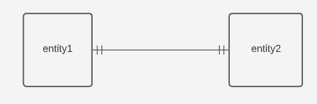
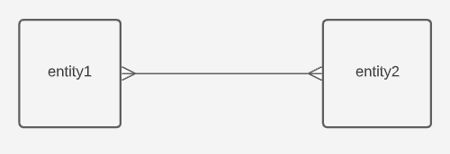
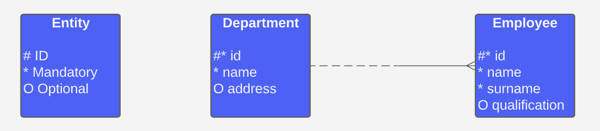
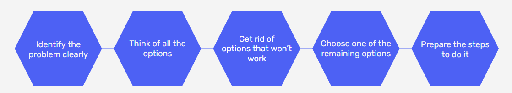

Design and visualise an entity relationship diagram for a database
Identify starting points for overcoming project and technical problems
Implement quality control measures and know how to assure the quality of data uploads and query output
Data Modelling
Why use a Data Model?
All data objects required by the database are accurately represented
A data model helps design the database at the conceptual, physical and logical levels
Data model structure helps define relational tables, primary and foreign keys as well as stored procedures
It provides a clear picture of the base data
It can help identify missing or redundant data
Types of Data Models
Conceptual
Logical
Physical
Types of Data Models
Conceptual
Logical
Physical
An organised view of database concepts and their relationships. The purpose is to establish:
Entities
Attributes
Relationships
customer
Customer Name
Customer Number
Sale
→
product
Product Name
Product Price
Characteristics of a Conceptual Data Model
Offers organisation wide coverage of business concepts
Designed and developed for business audiences
Developed independently of hardware specifications like storage capacity, or software specifications like DBMS technology. The focus is to represent data as a user would see it in the 'real world'
Types of Data Models
Conceptual
Logical
Physical
Used to define the structure of data elements and set relationships between them. This type of model:
Adds further information to the conceptual data model
Provides a foundation for a physical model (yet retains a generic structure)
Does not require keys, you just need to verify the connector details set for earlier relationships
customer
Customer Name
Customer Number
string
integer
Sale
→
product
Product Name
Product Price
string
integer
Common Data Types
string/character/varchar
integer
number/float/decimal
datetime
boolean
Characteristics of a Logical Data Model
Describes data needs for a single project but could integrate with other logical data models based on the scope of the project
Designed and developed independently from the DBMS
Data attributes will have data types with exact precisions and length
Normalisation processes to the model is applied typically till 3NF
Types of Data Models
Conceptual
Logical
Physical
Describes a database specific implementation of the data model. This type of model:
Offers database abstraction and helps generate schema through the rich meta-data
Helps visualise database structure by replicating column keys, constraints and other RDBMS features
customer
Customer Name
Customer Number
string
integer
Primary Key
Customer Number
Sale
→
product
Product Name
Product Price
string
int
Primary Key
Product Name
Characteristics of a Physical Data Model
Contains relationships between tables
Developed for a specific version of a DBMS, location, data storage or technology to be used in a project
Columns should have exact data types, lengths and default values assigned
Primary and foreign keys, views, indices, access profiles and authorisations are defined
Entity Relationship Diagrams
An Entitiy Relationship Diagram (ERD) lets you see how different objects (e.g. customers, products) relate to each other in a database.
Components
Entity
Relationship
Attribute
Components
Entity
Relationship
Attribute
Where the data is stored (e.g. a table in a RDBMS)
Entity
Attribute1
Attribute2
Attribute3
Strong Entitiy
Has a primary key and does not depend on another entity to exist
E.g. student information
Weak Entitiy
Depends on another entity to exist
I.e. the primary key is a foreign key in another table
E.g. student enrolment information
Components
Entity
Relationship
Attribute
Defines how two entities are related to each other
Represented as lines with a "cardinality" that explains the number of instances between two entities
One to One Relationship
One record of an entity is directly related to another record of an entitiy

One to Many Relationship
One record of an entity is related to one or more records of another entity
Many to Many Relationship
Many records of one entity can be related to many records of another entity

One or Zero to to Many Relationship
One record of an entity is related to zero, one or more records of another entity
Components
Entity
Relationship
Attribute
A property of an entity or something that can be used to describe an entity
Attribute Type
Description
Example
Simple
Cannot be split into other attributes
First name, surname
Composite
Can be split into other attributes
Name (can be split into forename, middle name and surname)
Derived
Calculated or determined from another attribute
Age of record calculated from creation date
Barker Notation

DIY Database Design
Spotify
What is its purpose?
Stream music based on artists, albumns, playlists or genres
What is the user input?
Track title, album title, artist name or playlist title
What will the user receive?
Music content
Spotify
What database tables are required?
Artists
Albums
Playlists
Tracks
Users
Activity
The state of Iowa wants to design a database that records alcohol sales from all stores in the state.
Using the information on the following slide, design an ERD to show how how the database should bs structured.
Entity
Transaction
Product
Store
County
Attributes
ID Date item_no store_id
item_no description case_cost proof
store_id store_name address county
county population
Overcoming Problems
Debugging!
Technical things not doing what you expect or need them to do can be a very frustrating experience
What experience do you have with debugging?
Read
Rubberduck
Ask
blank
Check the error message, what does the software say the problem is?
Read
Rubberduck
Ask
blank
Go through the code line by line and explain to a 'rubber duck' what is going on and try and spot the error
Read
Rubberduck
Ask
blank
Talk to an expert in your organisation, or search for the solution on stackoverflow
To improve accuracy, quality and usefulness any errors should be corrected, imputed or rejected
Activity
In groups choose a couple of the scenarios on the next slide and discuss how you would mitigate or solve them
Data isn't available as planned
A team member has not delivered what you need
Technical failure resulting in work lost
Project is taking longer than forecast
Critical team member leaves the company suddenly
Key stakeholder changes the scope mid project
Client wants delivery deadline brought forward
Becomes clear you cannot deliver what was promised to client
Form an Action Plan
1. Confirm and identify the problem
2. Quantify and describe- what is the impact?
3. What are the potential next steps?
4. Communicate to stakeholders and confirm desired next steps
5. Adjust plan and circulate
6. Continue to new plan, repeat if necessary

Can this problem be solved?
Do one thing at a time
Focus on what you can control
Sometimes doing nothing is best
Quality Control
What issues might we have creating a table with these field names?
Subscribers
subID
firstName
surname
email
birthday
Truncation
Corruption
Missing Data
Data Types
Translation
blank
Precision is lost when the data is stored somewhere too short to hold its entire length
Truncation
Corruption
Missing Data
Data Types
Translation
blank
Commas, apostrophes and other delimeters are moved/lost maing the table unreadable
Truncation
Corruption
Missing Data
Data Types
Translation
blank
Rows go missing when only a portion of the data is uploaded
Truncation
Corruption
Missing Data
Data Types
Translation
blank
Data mismatch from wrong data types being entered into fields
Truncation
Corruption
Missing Data
Data Types
Translation
blank
Encoding is wrong or symbols or rich characters are lost
Common tools to help us be confident in our data accuracy
Count the data
Spot checks
Calculate aggregates
Export comparison
Activity
In groups discuss:
Why is quality control important?
Whose responsibility is quality control?
When should quality control occur?
How should quality control be recorded?
What should you if somehting fails quality control?
6 Core Data Quality Dimensions
Completeness
No missing values
Uniqueness
Data only stored in one place
Timeliness
Data should be reasonably up to date
Validity
Conforms to the correct syntax
Accuracy
Value stored is correct for its occurrence
Consistency
Form and content of field is always the same
In summary...
Quality control gives us confidence in results
Simple techniques can be used to check uploads, simple queries can be used to check results
Checking the quality as you go is easier and more efficient than doing it at the end
Code can be designed to be more robust
Performance Techniques
Performance issues can arise due to...
Too much data
Inefficient queries
Over complex queries (too many joins)
Database is not normalised properly
What is the quickest way to find a topic in an encyclopedia?
Indexing
Every record in a database is assigned an index
Data is retrieved by referencing the index
Index
1
2
3
4
...
25
26
Index
Letter
Phonetic
1
A
Alpha
2
B
Bravo
3
C
Charlie
4
D
Delta
...
...
...
25
E
Yankee
26
F
Zulu
Denormalisation
A database optimisation technique where redundant data is added to one or more tables to help avoid costly joins in a relational database.
Denormalisation
Pros
Data retrieval is faster through fewer joins
Queries are simpler through looking at fewer tables
Cons
Updates and inserts are more expensive and harder to write
Data may be inconsistent
Data redundancy requires more storage
date
month
sales
country
code
continent
08/06/2020
6
791
France
FR
Europe
08/06/2020
6
582
Canada
CA
North America
08/06/2020
6
915
Egypt
EG
Africa
08/06/2020
6
787
Norway
NO
Europe
country
wins
draws
losses
win %
France
6
1
0
100%
Croatia
6
0
1
85.7%
Belgium
6
0
1
85.7%
England
4
0
3
57.1%
Database Maintenance
Maintaining a database is critical to ensuring a database environment performs reliably and efficiently. We need these tasks to:
→ Increase performance
→ Free up disk space
→ Check for data errors
→ Check for hardware faults
Log File Manintenance
Log files are invaluable for diagnosing problems in your database and should therefore be saved
They can however be quite large (especially at high debug levels) and so should be discarded after a reasonable period of time
Indexes can become fragmented as new data is introduced which can affect performance
id
name
1
Jane
2
Peter
3
Kim
id
name
1
Jane
2
Peter
3
Kim
id
name
1
Jane
2
Peter
3
Kim
Other Techniques:
Data Compaction
Integrity Check
Backing Up
Compress the data so it can be stored more efficiently and quickly
Other Techniques:
Data Compaction
Integrity Check
Backing Up
Ensure relationships between entities have been observed
Other Techniques:
Data Compaction
Integrity Check
Backing Up
Regularly back your data up!
Recap
Learning Objectives
Design and visualise an entity relationship diagram for a database
Identify starting points for overcoming project and technical problems
Implement Quality Control measures and know how to assure the quality of data uploads and query output
Assignment
Database Design
Use a work-related dataset to design your own relational database. You should describe the dataset, follow the normalisation steps and create an Entity Relationship Diagram (ERD).
Word Count
Max 1500 words
Deadline
3 weeks
Deliverables
Word Document, PowerPoint, Excel File, PDF, Lucid Chart